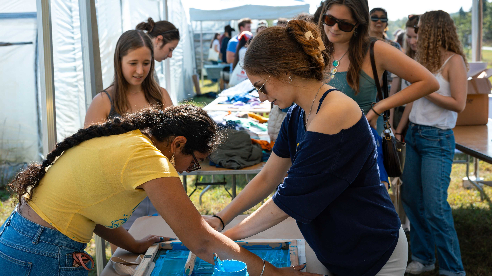
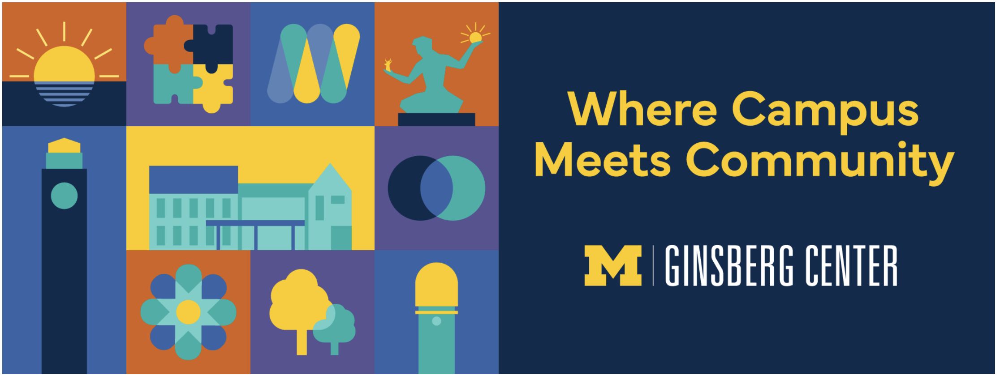
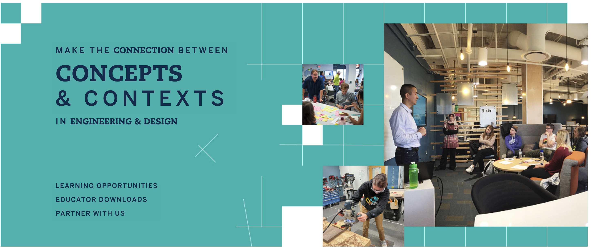

Find Support Across the University
The Engaged Learning Office works with community partners from all industries and sectors, ranging from Fortune 500 tech companies to grassroots nonprofits and cultural heritage institutions, to provide project-based opportunities for students.
As a partner organization, you can engage with UMSI students to improve your information systems and increase your internal knowledge of novel information practices.

Additional Campus Partner Resources
Cross-disciplinary partner organizations across the University of Michigan offer specialized instructional support and workshop sessions that you can incorporate into your curriculum.
Ginsberg Center for Community Engagement

Focus: Prepares undergraduate and graduate students for respectful, reciprocal community-engaged learning in civic and non-profit settings.
Note: All first-year MSI and MHI students participate in a foundational Ginsberg workshop through SI 500.
Submit a Ginsberg Center Support Request (please request at least 1 month in advance).
Center for Socially Engaged Engineering and Design (C-SEED)

Focus: Educational sessions on socially engaged design, sociotechnical thinking, human-centered approaches, and community ethics in technical applications.
Explore C-SEED Educational Modules
University of Michigan Library Instructional Services
Focus: Specialized instruction on source evaluation, special collections, literature strategies, poster presentations, data visualization, and citation management tools.
Request U-M Library Instruction
Skill Development Workshops
During the first month of the Fall and Winter terms, the ELO offers multiple workshop iterations focused on three core competency areas. Workshops are offered at introductory, intermediate, and advanced levels to match your course's student cohort.
Core Competency Areas
- Teamwork & Collaboration: Team establishment, roles and psychological safety, conflict mitigation, peer feedback, and team closeout.
- Client & Partner Engagement: Client-facing communication, establishing relationships and project bounds, maintaining professional touchpoints, and deliverable handoff.
- Project Management: Agile and phased project management, initiation and scoping, milestone tracking, risk monitoring, and project closure.
Workshop Progression Levels
| Development Level |
Target Student Audience |
Course Alignment |
| Introductory Level |
First-semester Master's students & First-semester Juniors |
Core required courses & foundational project labs |
| Intermediate Level |
2nd & 3rd semester Master's, 2nd-semester Juniors, 1st-semester Seniors |
Elective project courses & applied research units |
| Advanced Level |
Final-year Master's students & Final-semester Seniors |
Capstones, client clinics & master's thesis labs |
Custom In-Class Workshops
If you prefer a tailored session delivered during class time, ELO staff can customize an interactive workshop for your syllabus needs.
- Flexible Timing: Sessions range from 20-minute targeted briefings to 3-hour deep-dive workshops.
- Active Learning: Every session includes hands-on exercises, scenario discussions, or tool practice relevant to your students' active projects.
Requesting a Workshop
- Pre-Semester Requests: Submit at least two weeks before the academic term begins.
- In-Semester Requests: Submit at least one month prior to your desired workshop date.
Submit your request:ELO In-Class Workshop Request Form
Questions about workshop content or custom tailoring? Contact Alissa Talley-Pixley, Senior Associate Director of Student Engagement, at
alissat@umich.edu.